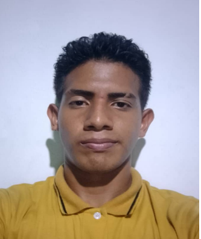

Líder de proyecto
Nathalia Angelina Rondón Montero
Meticulosa con la limpieza de componentes, disciplinada y comprometida con el aprendizaje continuo para la mejora de habilidades.
Correo: nathaliarondonm@gmail.com
Selecciona un componente para ver sus fallas más comunes y cómo solucionarlas.
El mantenimiento de los equipos de cómputo de la E.B.N.B. "Antonia Esteller" garantiza que los recursos del laboratorio estén disponibles, seguros y en condiciones óptimas para el proceso de enseñanza-aprendizaje.
A mediados de enero de 1959 inicia sus labores el plantel que luego sería la E.B.N.B. “Antonia Esteller”, integrando alumnos de comunidades vecinas. En 1999 se impulsa el proyecto de Escuelas Bolivarianas, con jornada integral que incorpora alimentación, deporte, cultura y pensamiento bolivariano.
En 2005 se consolida con el “Jardín de Infancia” formando un solo equipo directivo; desde 2006 se ejecuta plenamente el Programa de Alimentación Escolar (PAE) garantizando permanencia y atención integral del estudiantado.
Lograr la identificación del educando con un aprendizaje cotidiano basado en los pilares de la Educación Bolivariana: Aprender a Crear, Convivir y Participar, Valorar y Reflexionar; articulando comunidad y escuela hacia una educación de calidad.
Ofrecer una educación integral en un espacio de justicia social y renovación pedagógica permanente, promoviendo ciencia, arte, tecnología, deporte y producción cultural con identidad nacional.
Haz clic en el mapa para abrir la ubicación en una pestaña nueva.
Dirección: Calle “C” s/n entre los barrios 11 de Abril e Independencia, Municipio Girardot, Estado Aragua, Venezuela.
Listado de herramientas recomendadas para realizar el mantenimiento preventivo y correctivo de los equipos del laboratorio.
Material que documenta las jornadas de mantenimiento, diagnóstico y uso pedagógico del laboratorio de computación.
Respuestas rápidas sobre el mantenimiento de computadoras del laboratorio.
Equipo desarrollador — Estudiantes del PNF Informática, UPT Aragua.
Meticulosa con la limpieza de componentes, disciplinada y comprometida con el aprendizaje continuo para la mejora de habilidades.
Correo: nathaliarondonm@gmail.com

Apasionado por los videojuegos e interesado en desarrollo web y de videojuegos. Dispuesto a aprender.
Correo: stevenarroyo33102@gmail.com
Interés en sistemas operativos, redes y hardware.
Correo: esteveangel43@mail.com